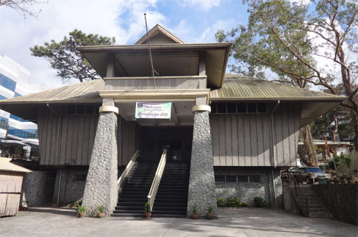
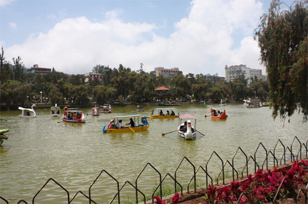
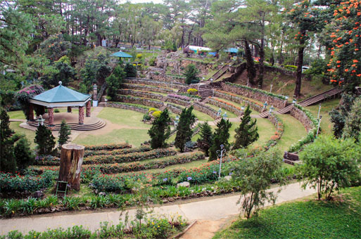

Baguio City is a mountain resort city located in Northern Luzon, Philippines. It is known as the Summer Capital of the Philippines, owing to its cool climate since the city is located approximately 1,540 meters (5,050 feet) above sea level in the Luzon tropical pine forests ecoregion, which also makes it conducive for the growth of mossy plants and orchids. Baguio is classified as a Highly Urbanized City (HUC). It is geographically located within Benguet.
Tourism is one of Baguio's main industries due to its cool climate and history. The city is one of the country's top tourist destinations. During the year end holidays some people from the lowlands prefer spending their vacation in Baguio, to experience cold temperatures they rarely have in their home provinces. Also, during summer, especially during Holy Week, tourists from all over the country flock to the city. During this time, the total number of people in the city doubles. To accommodate all these people there are more than 80 hotels and inns available. Local festivities such as the Panagbenga Festival also attracts both local and foreign tourists.
Baguio is the lone Philippine destination in the 2011 TripAdvisor Traveller's Choice Destinations Awards (Asia category) with the city being among the top 25 destinations in Asia. The Burnham Park, Mines View Park, Teacher's Camp, and Baguio Cathedral are among the top tourist sites in Baguio.
Photo



 Home
History
Destinations
Blog
Contact Us
Home
History
Destinations
Blog
Contact Us